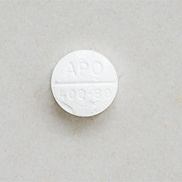

Sulfamethoxazole / Trimethoprim
BRAND NAMEs: SEPTRA®, SULFATRIM®, bactrim®
This medication is not funded by BC Transplant. This medication is available as an oral tablet and liquid, and may look different depending on the brand.
- Septra tablet:
- 
What is this medication for?
This is a combination antibiotic used to prevent or treat a type of lung infection called PCP or PJP which is caused by a fungus. This type of infection is more common in patients who have a suppressed immune system.
How should I take this medication?
This medication may be taken with or without food. It can be taken at any time of the day and may be taken at the same time as any of your other medications. It is best to take it at the same time every day, to help develop a routine.
Drink a full glass of water with this medication. This helps prevent kidney stone formation.
What are some possible side effects of this medication?
Nausea and vomiting
Take medication with food to minimize this side effect. Check with your doctor if bothersome or persistent.

Dizziness
Check with your doctor if this is bothersome or persistent.
Sun sensitivity
Wear a hat, long sleeves and long pants or skirt outside on sunny days. Apply a sun block lotion with a SPF (sun protection factor) of at least 30
Skin rash or itching
Notify your doctor right away.